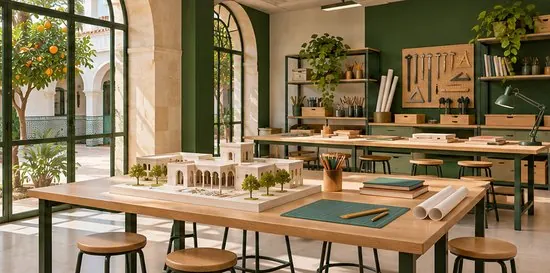

Programmes
Illustrations des espaces d’apprentissage du concept.

Maternelle
Langage oral, motricité et découverte des autres. La journée alterne des ateliers courts, des histoires et du jeu guidé.
Préparer la visite
Primaire
Lecture, écriture et mathématiques structurent la semaine. Les projets de classe donnent aux élèves l’occasion de présenter leur travail.
Préparer la visite
Collège
Les élèves structurent leur travail, apprennent à argumenter et développent des méthodes de révision.
Préparer la visite
Lycée
Entraînement aux épreuves, accompagnement à l’orientation et préparation à la prise de parole.
Préparer la visite